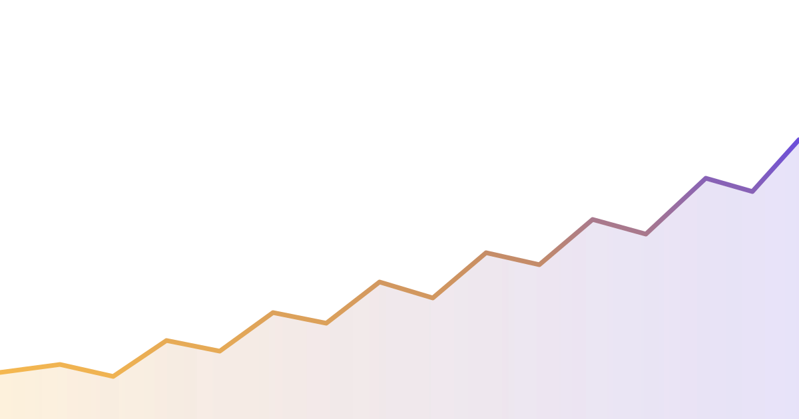

CryptoSmith XPERPS & CRYPTOTRADE BOT
An algorithmic trading bot for Kraken, Binance, WEEX and Hyperliquid. Multi-user, every decision logged, every result published — including the wrong ones.
LIVE TELEMETRY

markets watched154
cycle120 s
decisions to date18,402
01 · WATCH
Every market, every cycle
150+ markets scanned on a fixed cycle. The AI picks the watchlist; the rules pick the trades.
02 · DECIDE
Rules, not moods
Dozens of signals, hundreds of parameters — set by you, applied without exception.
03 · EXECUTE
On four venues
Spot and perps across Kraken, Binance, WEEX and Hyperliquid, each with its own keys and limits.
04 · PUBLISH
Nothing hidden
Every decision journaled. Failed experiments published the same way successful ones are.